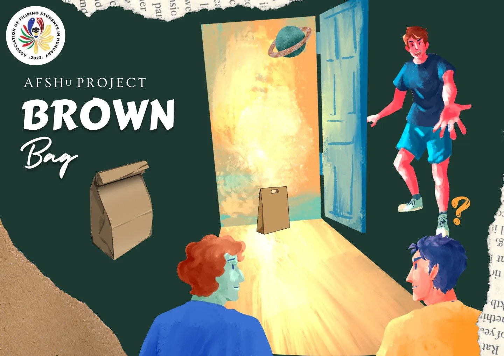

PROJECT BROWN BAG
As part of AFSHu's advocacy to support research and scholarship, we are also launching PROJECT BROWN BAG. A brown bag session typically gathers individuals to bring and eat their lunches together while listening to a speaker, who facilitates knowledge transfer and skill development.
In AFSHu parlance, PROJECT BROWN BAG caters to any Filipino bachelors, masters, or doctoral students, who would like to present their research article - already published in a peer-reviewed academic journal - through a webinar format.
From January to March, AFSHu already invited student speakers who will deliver informative and engaging lectures. If you are interested to be one of our speakers from April onwards, we invite you to fill up an application form. You may access the form through this link: https://bit.ly/afshu_bbapplicant


JOIN THE AFSHu DISCORD CHANNEL
AFSHu is thrilled to invite Filipino students in Hungary to join our Discord channel. As part of our advocacy to promote wellness and mental well-being, AFSHu conceived the idea of creating a platform where students could share their stories, ideas, aspirations, and even challenges as foreign students. To join, scan the QR code or go to bit.ly/afshudiscord.
KUMUSTUHAN
This year, AFSHu is launching a new project, which we call KUMUSTUHAN, that will hopefully benefit the entire Filipino student community in Hungary. AFSHu will visit various cities to meet with Filipino students. As an informal activity, AFSHu aims to commune with its members and gain insights on their varied experiences as international students. Through this, we hope to formulate better activities that target the needs of Filipino students.
Keep in touch with your Uni's Board of Director to get updates regarding the KUMUSTAHAN in your city.
Kita-kits mga ka-AFSHu!
#AFSHu #SerbisyongAFSHu


.jpg)
.jpg)
.jpg)